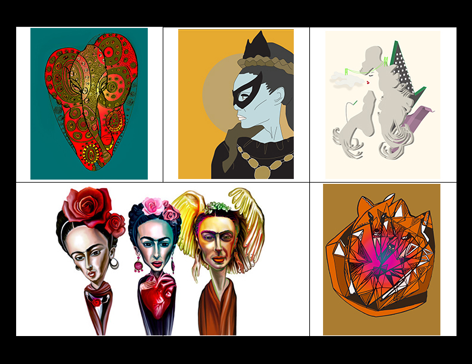
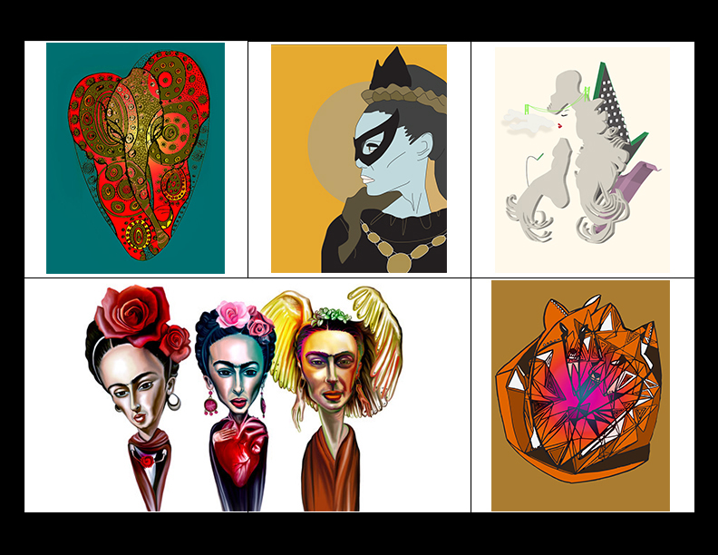

Characters & Art
When I was younger I can remember drawing my family. My mom had a beautiful heart shaped gown and the rest of the family were made of boxed shaped figures, all done in vibrant magic markers.
I remember wanting to do better. Over time my art developed into illustrations. Drawing was my way of escaping.
"I was poor and hungry, and illustration was the shortest path to a slice of bread, as compared to a gallery showing. I had nothing as a child. I drew on toilet paper with pencils – that was the only paper around. Probably why I love drawing so much today is because it was just all I had at the time." -Drew Struzan
 
